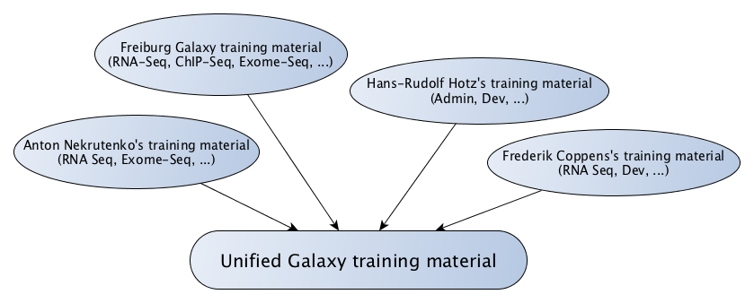
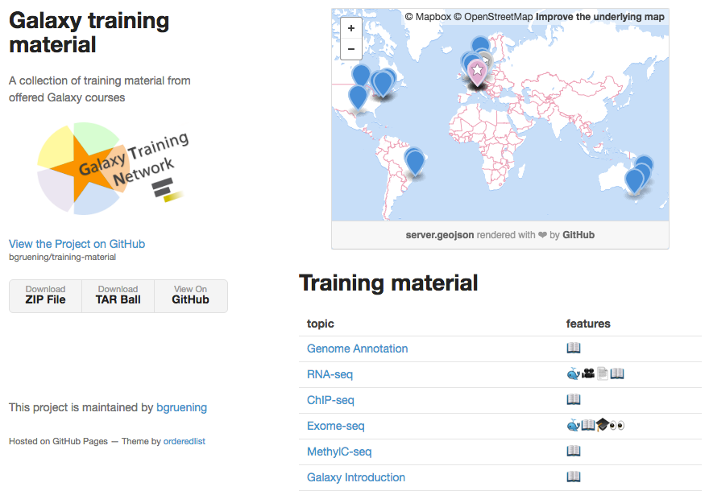
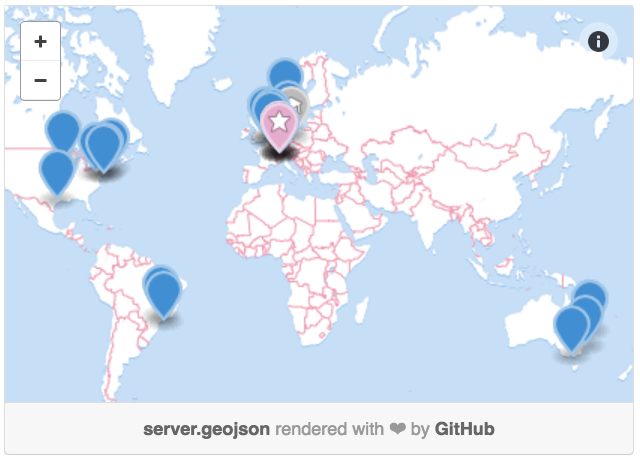

<!doctype html>
<html lang="en">

	<head>
		<meta charset="utf-8">

		<title>Galaxy Training Material</title>

		<link rel="stylesheet" href="../reveal.js/css/reveal.css">
		<link rel="stylesheet" href="../reveal.js/css/theme/simple.css" id="theme">

		<!-- Code syntax highlighting -->
		<link rel="stylesheet" href="../reveal.js/lib/css/zenburn.css">

		<link rel="stylesheet" href="../css/custom.css" id="theme">

		<!-- Printing and PDF exports -->
        <script>
          if( window.location.search.match( /print-pdf/gi ) ) {
            var link = document.createElement( 'link' );
            link.rel = 'stylesheet';
            link.type = 'text/css';
            link.href = '../reveal.js/css/print/pdf.css';
            document.getElementsByTagName( 'head' )[0].appendChild( link );
          }
        </script>
		<!--<script>
            if (window.location.search.match(/print-pdf/gi)) {
                document.write('<link rel="stylesheet" href="css/pdf.css" type="text/css">');
            }
        </script>-->

		<!--[if lt IE 9]>
        <script src="../reveal.js/lib/js/html5shiv.js"></script>
        <![endif]-->
	</head>

	<body>
		<div class="reveal">
            <div class="slides">
                <section data-markdown>
                    <script type="text/template">
                        ## Welcome!

                        

                        The easiest way to **navigate** this slide deck
                        is **by hitting `[space]` on your keyboard**

                        You can also navigate with arrow keys, but be careful because some
                        slides can be nested inside of each other (vertically)
                    </script>
                </section>

                <section data-markdown>
                    <script type="text/template">
                        ## Towards unification of <br/>
                        ## Galaxy Training Material

                        
                    </script>
                </section>

                <section>
                    <section data-markdown>
                        <script type="text/template">
                            ### At Galaxy Community Conference 2016

                            Galaxy Training Network decides

                            

                        </script>
                    </section>
                </section>

                <section>
                    <section data-markdown>
                        <script type="text/template">
                            ## Current state and WIP
                            ## of this project
                        </script>
                    </section>

                    <section data-markdown>
                        <script type="text/template">
                            ### One (temporary) GitHub repository

                            [bgruening/training-material](https://github.com/bgruening/training-material)

                            - 9 topics
                                - General Galaxy introduction
                                - RNA-Seq, ChIP-Seq, Exome-Seq, MethylC-Seq, Genome Annotation
                                - Admin/Dev
                            - Several type of materials
                                - Slides
                                - Hands-on
                                - Galaxy tour
                        </script>
                    </section>

                    <section data-markdown>
                        <script type="text/template">
                            ### Unification of the training material

                            For each topic, we would like to have:

                            - Tutorial(s)
                            - Slide deck(s) in one format
                            - A Docker container for the training
                            - Galaxy tour(s)
                            - Datasets on Zenodo for persistence and citability
                        </script>
                    </section>

                    <section data-markdown>
                        <script type="text/template">
                            ### A webpage

                            

                            [http://bgruening.github.io/training-material/](http://bgruening.github.io/training-material/)
                        </script>
                    </section>

                    <section data-markdown>
                        <script type="text/template">
                            ### Support of the community

                            
                            
                            

                            And numerous worldwide contributors
                            <br/>

                        </script>
                    </section>
                  </section>

              </section>

              <section>
                  <section data-markdown>
                      <script type="text/template">
                          ## In the future
                      </script>
                  </section>

                  <section data-markdown>
                      <script type="text/template">
                          ### 2016

                          - **6-7th October**: Training Hackathon
                          - Update of RNA-Seq, ChIP-Seq, MethylC-Seq and Genome Annotation material
                      </script>
                  </section>

                  <section data-markdown>
                      <script type="text/template">
                          ### Begin of 2017

                          *After the proof of concept of this repository*
                          - Moving to a Galaxy GitHub repository
                          - Writing of a small manuscript about this effort
                      </script>
                  </section>

              </section>

              <section>
                  <section data-markdown>
                      <script type="text/template">
                          

                          To make Galaxy training<br/>
                          **outstanding** in Bioinformatics

                          [<small>*More information about this project*</small>](https://gist.github.com/bgruening/a54a8600c5cddca82424ad13569708c3)
                      </script>
                  </section>

              </section>
			</div>

		</div>

		<script type="text/javascript" src="../reveal.js/lib/js/head.min.js"></script>
        <script type="text/javascript" src="../reveal.js/js/reveal.js"></script>
        <script type="text/javascript">
            Reveal.initialize({
                slideNumber: !window.location.search.match(/print-pdf/gi),
                history: true,

                theme: Reveal.getQueryHash().theme,
                transition: Reveal.getQueryHash().transition || 'concave',

                dependencies: [
                    { src: '../reveal.js/lib/js/classList.js', condition: function() { return !document.body.classList; } },
                    { src: '../reveal.js/plugin/markdown/marked.js', condition: function() { return !!document.querySelector( '[data-markdown]' ); } },
                    { src: '../reveal.js/plugin/markdown/markdown.js', condition: function() { return !!document.querySelector( '[data-markdown]' ); } },
                    { src: '../js/highlight.js', async: true, callback: function() { hljs.initHighlightingOnLoad(); } },
                    { src: '../reveal.js/plugin/notes/notes.js', async: true },
                ]
            });
        </script>

	</body>
</html>
